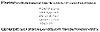

Click Here!


|
Click Here! |
|
| |
|
|
|
To access the contents, click the chapter and section titles.
Applied Cryptography, Second Edition: Protocols, Algorthms, and Source Code in C (cloth)
Transposition Ciphers In a transposition cipher the plaintext remains the same, but the order of characters is shuffled around. In a simple columnar transposition cipher, the plaintext is written horizontally onto a piece of graph paper of fixed width and the ciphertext is read off vertically (see Figure 1.4). Decryption is a matter of writing the ciphertext vertically onto a piece of graph paper of identical width and then reading the plaintext off horizontally. Cryptanalysis of these ciphers is discussed in [587,1475]. Since the letters of the ciphertext are the same as those of the plaintext, a frequency analysis on the ciphertext would reveal that each letter has approximately the same likelihood as in English. This gives a very good clue to a cryptanalyst, who can then use a variety of techniques to determine the right ordering of the letters to obtain the plaintext. Putting the ciphertext through a second transposition cipher greatly enhances security. There are even more complicated transposition ciphers, but computers can break almost all of them. The German ADFGVX cipher, used during World War I, is a transposition cipher combined with a simple substitution. It was a very complex algorithm for its day but was broken by Georges Painvin, a French cryptanalyst [794]. Although many modern algorithms use transposition, it is troublesome because it requires a lot of memory and sometimes requires messages to be only certain lengths. Substitution is far more common. Rotor Machines In the 1920s, various mechanical encryption devices were invented to automate the process of encryption. Most were based on the concept of a rotor, a mechanical wheel wired to perform a general substitution. A rotor machine has a keyboard and a series of rotors, and implements a version of the Vigenère cipher. Each rotor is an arbitrary permutation of the alphabet, has 26 positions, and performs a simple substitution. For example, a rotor might be wired to substitute “F” for “A,” “U” for “B,” “L” for “C,” and so on. And the output pins of one rotor are connected to the input pins of the next. 
For example, in a 4-rotor machine the first rotor might substitute “F” for “A,” the second might substitute “Y” for “F,” the third might substitute “E” for “Y,” and the fourth might substitute “C” for “E”; “C” would be the output ciphertext. Then some of the rotors shift, so next time the substitutions will be different. It is the combination of several rotors and the gears moving them that makes the machine secure. Because the rotors all move at different rates, the period for an n-rotor machine is 26n. Some rotor machines can also have a different number of positions on each rotor, further frustrating cryptanalysis. The best-known rotor device is the Enigma. The Enigma was used by the Germans during World War II. The idea was invented by Arthur Scherbius and Arvid Gerhard Damm in Europe. It was patented in the United States by Arthur Scherbius [1383]. The Germans beefed up the basic design considerably for wartime use. The German Enigma had three rotors, chosen from a set of five, a plugboard that slightly permuted the plaintext, and a reflecting rotor that caused each rotor to operate on each plaintext letter twice. As complicated as the Enigma was, it was broken during World War II. First, a team of Polish cryptographers broke the German Enigma and explained their attack to the British. The Germans modified their Enigma as the war progressed, and the British continued to cryptanalyze the new versions. For explanations of how rotor ciphers work and how they were broken, see [794,86,448,498,446,880,1315,1587,690]. Two fascinating accounts of how the Enigma was broken are [735,796]. Further Reading This is not a book about classical cryptography, so I will not dwell further on these subjects. Two excellent precomputer cryptology books are [587,1475]; [448] presents some modern cryptanalysis of cipher machines. Dorothy Denning discusses many of these ciphers in [456] and [880] has some fairly complex mathematical analysis of the same ciphers. Another older cryptography text, which discusses analog cryptography, is [99]. An article that presents a good overview of the subject is [579]. David Kahn’s historical cryptography books are also excellent [794,795,796]. 1.4 Simple XORXOR is exclusive-or operation: ‘^’ in C or ⊕ in mathematical notation. It’s a standard operation on bits:
Also note that:
The simple-XOR algorithm is really an embarrassment; it’s nothing more than a Vigenère polyalphabetic cipher. It’s here only because of its prevalence in commercial software packages, at least those in the MS-DOS and Macintosh worlds [1502,1387]. Unfortunately, if a software security program proclaims that it has a “proprietary” encryption algorithm—significantly faster than DES—the odds are that it is some variant of this.
/* Usage: crypto key input_file output_file */
void main (int argc, char *argv[])
{
FILE *fi, *fo;
char *cp;
int c;
if ((cp = argv[1]) && *cp!='\0') {
if ((fi = fopen(argv[2], “rb”)) != NULL) {
if ((fo = fopen(argv[3], “wb”)) != NULL) {
while ((c = getc(fi)) != EOF) {
if (!*cp) cp = argv[1];
c ^= *(cp++);
putc(c,fo);
}
fclose(fo);
}
fclose(fi);
}
}
}
This is a symmetric algorithm. The plaintext is being XORed with a keyword to generate the ciphertext. Since XORing the same value twice restores the original, encryption and decryption use exactly the same program:
There’s no real security here. This kind of encryption is trivial to break, even without computers [587,1475]. It will only take a few seconds with a computer. Assume the plaintext is English. Furthermore, assume the key length is any small number of bytes. Here’s how to break it:
Despite this, the list of software vendors that tout this toy algorithm as being “almost as secure as DES” is staggering [1387]. It is the algorithm (with a 160-bit repeated “key”) that the NSA finally allowed the U.S. digital cellular phone industry to use for voice privacy. An XOR might keep your kid sister from reading your files, but it won’t stop a cryptanalyst for more than a few minutes. 1.5 One-Time PadsBelieve it or not, there is a perfect encryption scheme. It’s called a one-time pad, and was invented in 1917 by Major Joseph Mauborgne and AT&T’s Gilbert Vernam [794]. (Actually, a one-time pad is a special case of a threshold scheme; see Section 3.7.) Classically, a one-time pad is nothing more than a large nonrepeating set of truly random key letters, written on sheets of paper, and glued together in a pad. In its original form, it was a one-time tape for teletypewriters. The sender uses each key letter on the pad to encrypt exactly one plaintext character. Encryption is the addition modulo 26 of the plaintext character and the one-time pad key character. Each key letter is used exactly once, for only one message. The sender encrypts the message and then destroys the used pages of the pad or used section of the tape. The receiver has an identical pad and uses each key on the pad, in turn, to decrypt each letter of the ciphertext. The receiver destroys the same pad pages or tape section after decrypting the message. New message—new key letters. For example, if the message is:
ONETIMEPAD
and the key sequence from the pad is
TBFRGFARFM
then the ciphertext is
IPKLPSFHGQ
because
|
|
Products | Contact Us | About Us | Privacy | Ad Info | Home
Use of this site is subject to certain Terms & Conditions, Copyright © 1996-1999 EarthWeb Inc. All rights reserved. Reproduction whole or in part in any form or medium without express written permision of EarthWeb is prohibited.
|
){kind=link}
){kind=link}